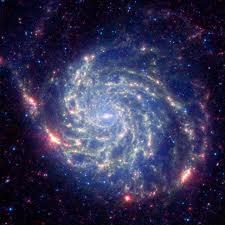

Terra - o fărâmă din Univers
Locul Terrei in Univers
Capitolul I.
Pamântul este o planeta din sistemul solar. Soarele nostru este doar o stea în galaxia Calea Lactee. Stelele sunt grupate în galaxii, fiecare galaxie continând milioane de stele. Universul este format din uriasi nori de gaz, din miliarde de stele si planete, separate prin imense spatii goale.
| SPATIUL TERREI |
|
 |
|
|
| Universul |
Calea Lactee |
Sistemul solar |
Terra |
| TIMPUL TERREI
|
|
|
 |
|
| Paleozoic |
Mezozoic |
Paleogen |
Azi |
Capitolul II.
Istoria Terrei in Univers
- Paleozoicul: acum 540 – 245 milioane de ani
La inceputul acestei ere se formeaza mari lanturi muntoase, in special in nordul Europei. In urma cu aproximativ 500 de milioane de ani apar primii pesti, apoi, in urma cu aproximativ 350 de milioane de ani, amfibieni, primele animale care vor parasi oceanul pentru a trai pe uscat. La sfarsitul acestei ere se formeaza noi lanturi muntoase: Apalasii, Masivul Central Masivul Armorican, Vosgii.
- Mezozoicul acum 245-64 milioane de ani
Se formeaza Oceanul Atlantic si cel Indian. La sfarsitul acestei perioade incepe incretirea alpina care se afla la originirea Muntilor Stancosi, a Alpilor, a Pirineilor si a Himalayei. Pamantul este populat de reptile mari, ca dinozaurii. Apar apoi primele plante cu flori.
- Cenozoicul: acum 64 milioane de ani-pana in zilele noasre
Continua formarea lanturilor muntoase inceputa in era secundara. Mamiferele terestre se dezvolta si populeaza toate mediile. In era cuaternara, apare omul. In mai multe randuri, un frig puternic acopera cu gheata o parte a Pamantului. Aceste perioade de glaciatiune, care dureaza in medie 100.000 de ani, alterneaza cu perioade mai calde, cum este cea pe care o traversam astazi.
Omul isi cercetaza planeta: Pamantul e rotund.
Mari descoperiri geografice